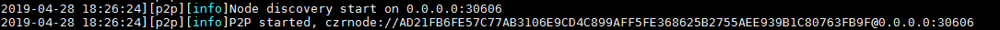
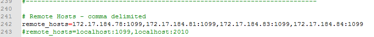

（三）新节点部署------Witness节点
Windows :
a. 新建见证人节点文件夹 : canonchain_witness
b. copy canonchain.exe,canonchain.pdb 到上述文件夹
c. （1） 如果是重新部署已有witness节点 ：
在 源服务器 的canonchain_witness的backup_witness里找到见证人账户文件 (如打开witness4test.bat文件，找到见证人账户.json文件名称)，然后把它copy到 目标服务器 canonchain_witness 的子文件夹 backup_witness
(如果没有backup_witness目录，就新建)
如 witness4test.bat 批处理内容是：
D:\canonchain_witness\canonchain.exe --daemon --rpc --rpc_control --data_path=D:\canonchain_witness\witness4 --witness
-- witness_account=D:\canonchain_witness\backup_witness\czr_3tiy2jgoUENkszPjrHjQGfmopqwV5m9BcEh2Grb1zDYgSGnBF7.json --password=123
这里的账户文件名称就是czr_3tiy2jgoUENkszPjrHjQGfmopqwV5m9BcEh2Grb1zDYgSGnBF7.json，然后在源服务器的canonchain_witness的backup_witness文件夹里找到此文件，把它复制到目标服务器
（2）如果是重新部署新生成的witness节点 ： 把新生成的witness的账户文件（.json）放到 目标服务器 的canonchain_witness的子文件夹 backup_witness
d. 启动见证人节点。【在canonchain_witness目录下 新建txt文件(如 witness4test.txt )然后改为.bat文件（witness4test.bat） .bat文件内输入如下节点启动命令】
可执行文件路径\canonchain.exe --daemon --data_path=指定相关配置路径 --witness --witness_account=见证人账户文件路径\文件名字 --password=密码
如：
D:\canonchain_witness\canonchain.exe --daemon --rpc --rpc_control --data_path=D:\canonchain_witness\witness4
--witness -- witness_account=D:\canonchain_witness\backup_witness\czr_3tiy2jgoUENkszPjrHjQGfmopqwV5m9BcEh2Grb1zDYgSGnBF7.json --password=123
注意：这里的--witness_account一定要与放在D:\canonchain_witness\backup_witness\backup_witness目录下的witness账户(.json)相匹配
启动之后会在"指定相关配置路径" （如D:\canonchain_witness\）下witness4文件夹并在witness4文件夹内生成config.json,db,log等文件
e. 运行.bat文件（如witness4test.bat）在节点目录（如witness4）下生成config.json等等文件后停止运行witness节点（ctrl c） 删除后缀为*db的目录或文件
f. 进入节点目录（如witness4）,修改config.json文件：
#ps:修改config.json配置文件需重新启动节点才会生效。（重新运行.bat文件）
log_console 改为true
配置"exemption_nodes"选项 格式如下:
exemption_nodes作用： 指定的node节点不受peer上限限制；
"exemption_nodes"：
[
],
具体的配置规则以及如何配置询问项目管理人或相关人员
exemption_nodes里面node id的获取：
exemption_nodes里面node id是在节点目录下的log日志中获取
比如： 39.106.58.20服务器的exemption_nodes需要获取39.106.60.108的node id：
（1） 登录39.106.60.108
cd /data/canonchain/witness5_rocks/log
witness5_rocks为节点目录
（2）打开节点刚启动时的日志

（4）替换 node id 里 @ 符号后面的地址：
（5）登录 39.106.58.20 ；cd /data/canonchain/witness9
（6） 打开witness9节点的config.json文件
（7） 在 exemption_nodes 里面添加 node id ；node id 需要添加英文格式的双引号
"exemption_nodes"：
[
],
（8）多个node id之间使用“，”(逗号)分隔
"exemption_nodes"：
[
]
h. 在canonchain_witness同级目录下，新建dropdb.bat文件，内容如下（删除canonchain_witness\witness目录下的所有db文件或目录）：
del /s /q D:\canonchain_witness\witness\blockdb && del /s /q D:\canonchain_witness\witness\keydb
del /s /q D:\canonchain_witness\witness\p2pdb && del /s /q D:\canonchain_witness\witness\walletdb
i. 在 同一个局域网 上的Controller的服务器上,把Slaver对应的 内网地址 添加到Controller的jemter安装路径下的jmeter.property文件中
这里的Controller与Slaver是jemter压测的概念
如： 由 北京 的39.105.67.44这台服务器来控制远程机子（如现在在 北京 39.105.135.34这台机子上） 那么39.105.67.44这台机子为Controller 39.105.135.34这台机子为Slaver
如： jmeter.property的文件路径：D:\Java\jmeter\bin\jmeter.property
在 北京 39.105.67.44(Controller) 这台服务器上打开jmeter.property
把 北京 39.105.135.34(Slaver) 的内网地址 172.17.184.81添加到jmeter.property中remote_hosts后面，端口号统一使用1099

Linux :
a. 在/data目录下新建canonchain目录
b. scp其它任一服务器下的/data/canonchain/目录下的所有文件以及文件夹
c. 适配witness节点账户：
（1）如果是重新部署已有witness节点 ：
在 源服务器 的/data/canonchain/backup_witness里找到见证人账户文件 (如打开witness4test.bat文件，找到见证人账户.json文件名称)，然后把它copy到 目标服务器 canonchain_witness 的子文件夹 backup_witness
(如果没有backup_witness目录，就新建)
如： witness4test.bat 批处理内容是：
nohup /data/canonchain/src/canonchain_build/canonchain --daemon --rpc --rpc_control --data_path=/data/canonchain/witness5_rocks --witness
--witness_account=/data/canonchain/backup_witness/czr_4HhYojuHanxQ57thkSxwy5necRtDFwiQP7zqngBDZHMjqdPiMS.json --password=123 &
这里的账户文件名称就是czr_4HhYojuHanxQ57thkSxwy5necRtDFwiQP7zqngBDZHMjqdPiMS.json，然后在源服务器的/data/canonchain/backup_witness目录里找到此文件，把它复制到目标服务器
（2）如果是重新部署新生成的witness节点 ： 新生成的witness的账户文件（.json）放到 目标服务器 的/data/canonchain/backup_witness目录下
d . 适配启动节点启动文件：
vim ./do_test
nohup /data/canonchain/src/canonchain_build/canonchain --daemon --rpc --rpc_control --data_path=/data/canonchain/witness5_rocks --witness
--witness_account=/data/canonchain/backup_witness/czr_4HhYojuHanxQ57thkSxwy5necRtDFwiQP7zqngBDZHMjqdPiMS.json --password=123 &
注意：这里的--witness_account一定要与放在/data/canonchain/backup_witness目录下的witness账户(.json)相匹配
e. 启动节点 在相应的witness（如witness5_rocks）下生成所有文件后 关闭节点
节点关闭：
（1）清除数据的同时关闭节点： ./dropdb_all
（2） 只关闭节点而不清除数据：
ps -aux|grep canonchain
kill ${canonchain_pid} : 这里的${canonchain_pid}为canonchain进程号，若进程号为34567，则kill 34567
f. 删除*db文件或目录，修改config.json文件：
log_console 改为true
配置"exemption_nodes"选项 配置规则如下:
"exemption_nodes"：
[
],
具体的配置规则以及如何配置询问项目管理人或相关人员